ヤフオクやらメルカリやらで選りすぐりのパーツを入手してきました。

購入してきたパーツに合わせてザグリ（穴）の位置や深さを調整します。
この深さによって音が変わってきたりするのでシビアで難しいです。。
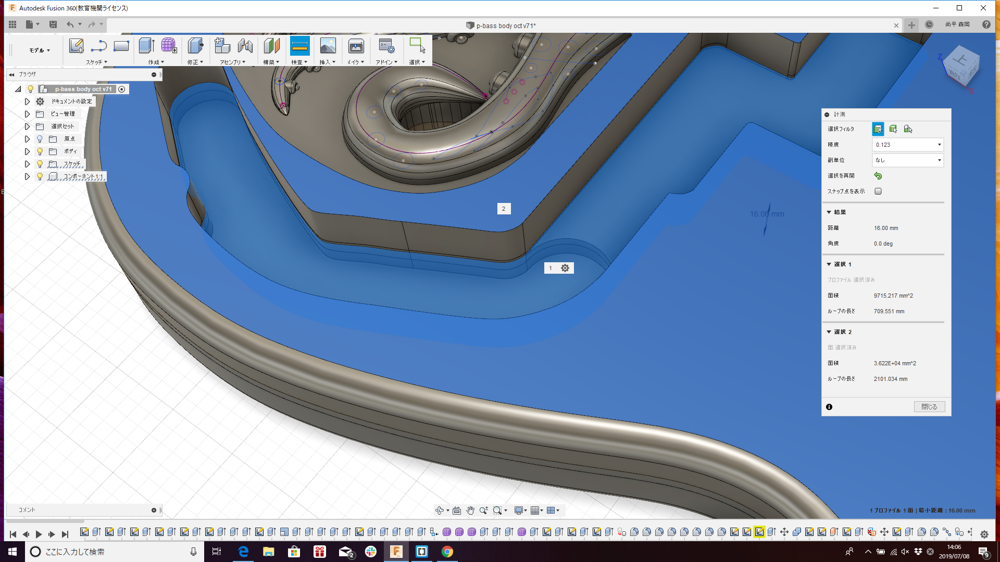
たこの表面に彫刻を施します。
方法としては３D切削の”投影”を使います。
”投影”を使えば彫刻のモデルを作らなくてもスケッチどうりに自動で表面に彫刻をしてくれます。
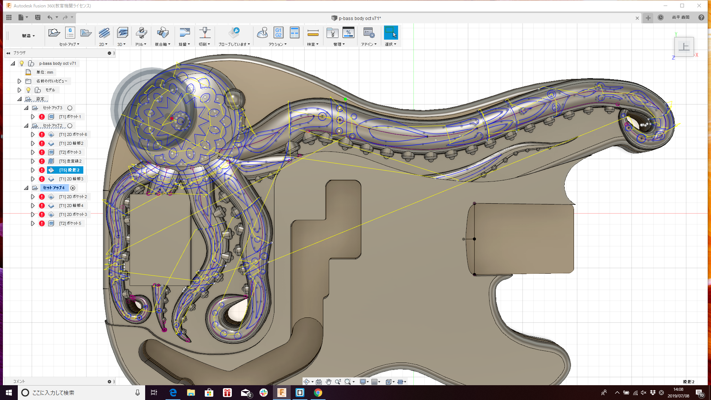
こちらがスケッチです。
CAMではいくつかの切削工程を組み合わせて切削します。
基本的には粗削り→仕上げ加工の順番です。
粗削りの中でもポケット除去、輪郭など部分ごとに分けて切削します。
使用するエンドミル（刃）もだんだん細く、細かくしていきます。
今回は６つの行程に分けて切削します。
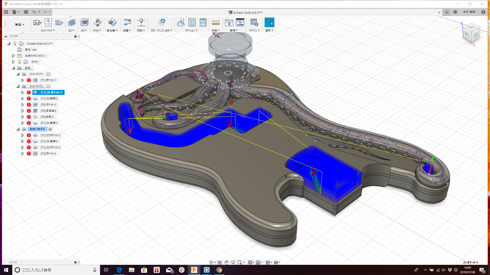 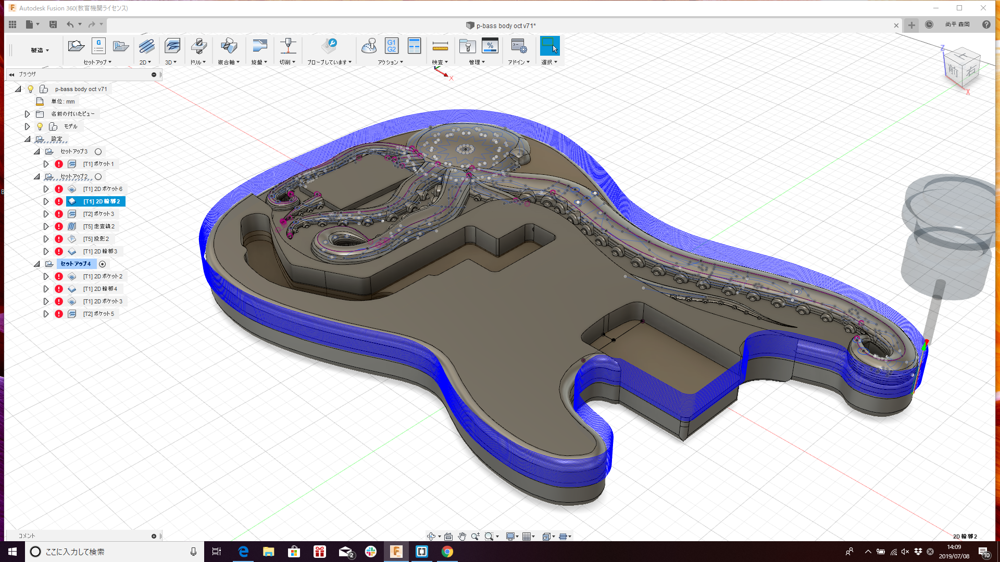 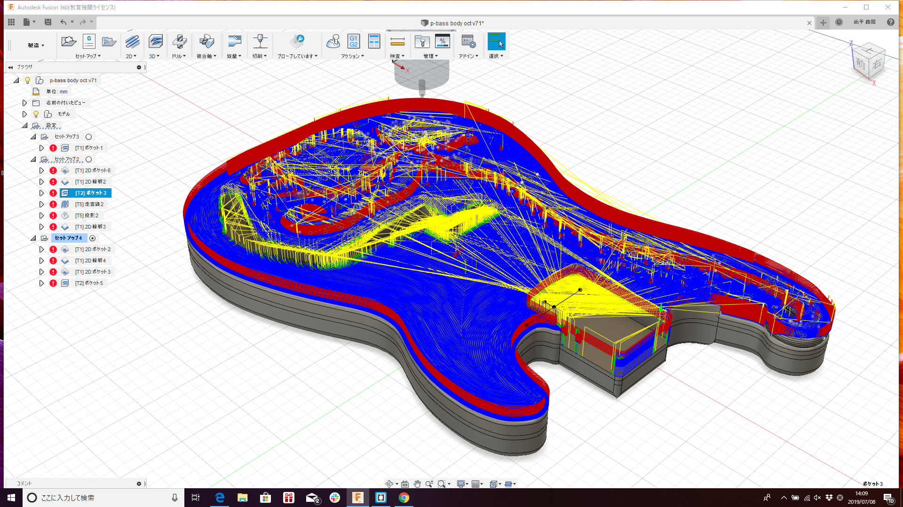
 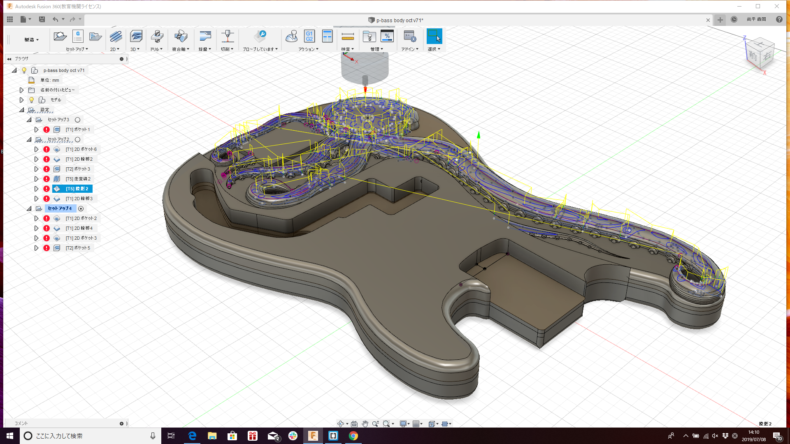 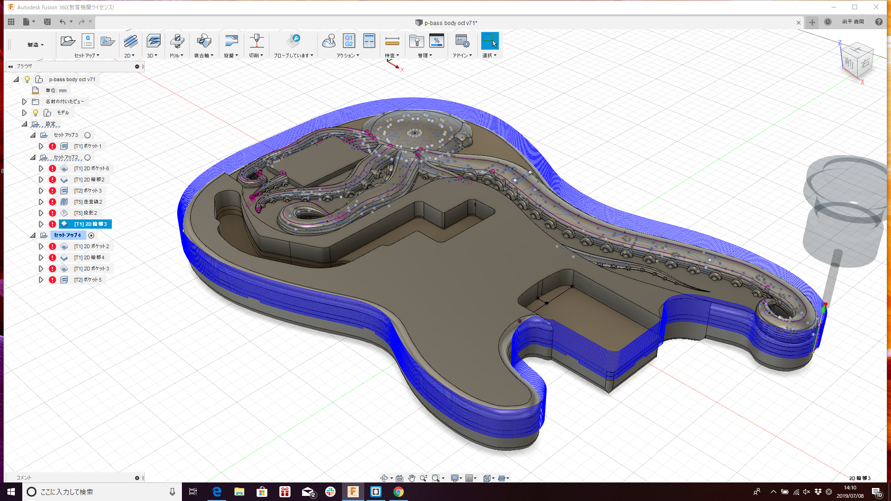
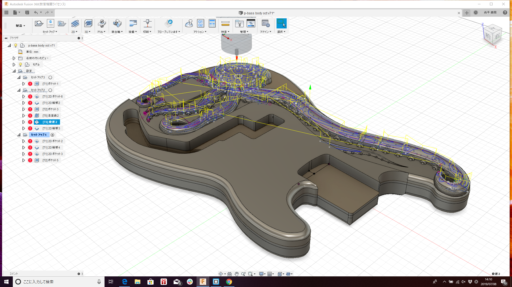 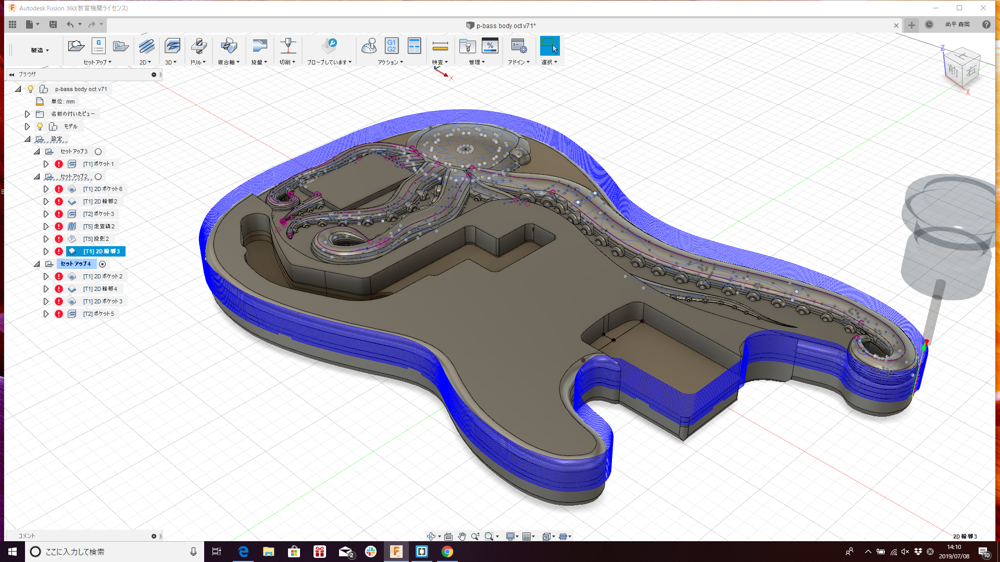
シミュレーションをしてみて異常がなければ、ポスト処理をしNCコードを作成します。
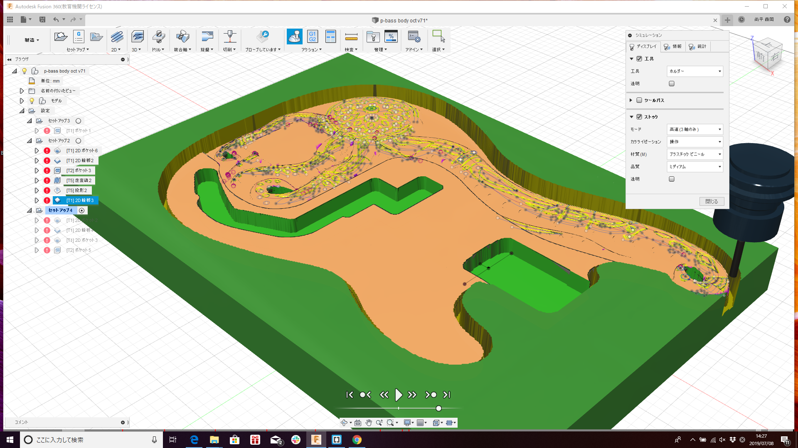
作ったNCデータをCNCのアプリケーションで読み込みます。
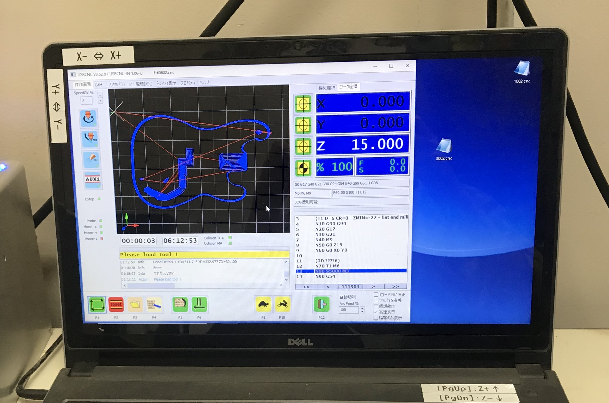
６ｍｍのエンドミルでザグリと輪郭を削っていきます。

３ｍｍのエンドミルで残りの部分を削っていきます。

２ｍｍのエンドミルで細かいところの仕上げを行っていきます。


２ｍｍのエンドミルで表面に彫刻を掘っていきます。


最後に６ｍｍのエンドミルで削り取ります。

これが切削を終えた状態です。

大体は出来ましたがバリがたくさんあります。
本当はこのバリもCNCで削れるはずですが、今回は出来ませんでした。
これは調べないといけないですね… 。
今回は手作業でバリを取っていきます。
やすりやらペンチで引っこ抜いていきます。
これがなかなか大変でした。。。
次にルーターやサンダー、紙やすりで細かいバリを取っていきます。